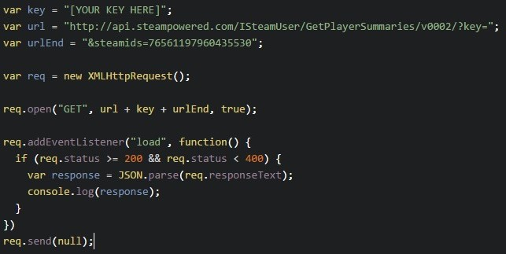

Interpreting JSON data
If you remember from the previous page, we made this http request to our API which allows us to get various information about a Steam user:
The data that we get back from this request is a JSON object. JSON stands for Javascript Object Notation and is simply a readable format for structuring data. We will not so much worry about what JSON is, but rather simply how to interpret the data we get back. You can read more about what JSON is here.
Let's continue to work with the example API call from above to get a player's summary data. If you were to execute this code with an html file and check the console in your browser, you should see some data that looks like this:

Ok great! So now we can see the data returned from our request. If we look at the top and find the response type, we see that it is an object. Within that response, going to the next line down, we see that the object has a name of players, which represents the player returned from our request based on the steamids value we entered along with our request (you can enter multiple steamids along with your request, by separating each id with a comma).
Within the players object, we can see that there is an array consisting of one object, an object holding all the data that is associated and visible from our selected user. See if you can find our target players' real name, personaname, profileurl and their avatar. Read more about these returned keys and values at the official API documentation.
Now that we can see our data...
Let's find out how we can access and display our player avatar, personaname, realname and profileurl.
Previous Continue